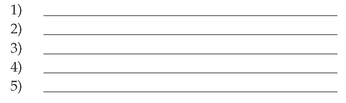
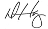

CONCLUSION
Learning without execution is useless. I didn’t write this book for my own amusement (this is hard work!) or even to simply “motivate” you. Motivation without action leads to self-delusion. As I said in the introduction, the Compound Effect and the results it will manifest in your life are the real deal. Never again will you wish and hope that success will find you. The Compound Effect is a tool that, when combined with consistent, positive action, will make a real and lasting difference in your life. Let this book and its philosophy become your guide. Let the ideas and success strategies sink in and produce genuine, tangible, measurable outcomes for you. Whenever you realize small, seemingly innocuous poor habits have crept back into your life, take out this book. Whenever you fall off the wagon of consistency, take out this book. Whenever you want to reignite your motivation and bolster your why-power, take out this book. Every time you read this book, it entices Big Mo to pay a visit to your life.
Let me share with you what motivates me. My core value in life is significance. My desire is to make a positive difference in other people’s lives. So to accomplish my goals, I need you to accomplish your goals. It is your testimonial of life-changing results I’m after. I want to receive your e-mail or letter, or to have you stop me in the airport next year (or even five or ten years from now), to tell me about the incredible results you’ve realized because of ideas you gained from this book. Only then will I know I have accomplished my goals, my objectives—that I am living up to my core values in life.
For you to get those results (and me, my testimonial), I know you have to take immediate action on your new insights and knowledge. Ideas uninvested are wasted. I don’t want that to happen. It’s now time to act on your new convictions. You now have the power, and I expect you to seize it!
You are ready to make dramatic improvements, right? Of course, the obvious answer is, “YES!” But you know by now that saying you’re ready to make the necessary changes and actually making them isn’t the same thing. To get different results, you’re going to have to do things differently.
No matter where you are, or what year it is when you find this book, if I could, I’d ask you these simple questions: “Look back on your life five years ago. Are you now where you’d thought you’d be five years later? Have you kicked the bad habits you had vowed to kick? Are you in the shape you wanted to be? Do you have the cushy income, the enviable lifestyle, and the personal freedom you expected? Do you have the vibrant health, abundant loving relationships, and the world-class skills you’d intended to have by this point in your life?” If not, why? Simple—choices. It’s time to make a new choice—choose to not let the next five years be a continuum of the last. Choose to change your life, once and for all.
Let’s make the next five years of your life fantastically different than the last five! My hope is that you’ve now removed your blinders. You know the truth about what it takes to earn success. You’ve got no more excuses. Like me, you too will refuse to be fooled by the latest gimmicks or become distracted by quick-fix enticements. You will stay focused on the simple but profound disciplines that will lead you in the direction of your desires. You know that success isn’t easy or overnight. You understand that when you’re committed to making moment-to-moment positive choices (despite the lack of visible or instant results), the Compound Effect will catapult you to heights that will astound you, bewilder your friends, family, and your competition. When you hold true to your why-power and stay consistent with your new behaviors and habits, momentum will carry you swiftly forward. And then, together, with that momentum and consistent, positive action, it will be impossible for the next five years to be more of the same. On the contrary, when you put the Compound Effect to work for you, you will experience a success I’m willing to bet you currently cannot imagine! It will be incredible.
I have one more valuable success principle to pass along to you. Whatever I want in life, I’ve found that the best way to get it is to focus my energy on giving to others. If I want to boost my confidence, I look for ways to help someone else feel more confident. If I want to feel more hopeful, positive, and inspired, I try to infuse that in someone else’s day. If I want more success for myself, the fastest way to get it is to go about helping someone else obtain it.
The ripple effect of helping others and giving generously of your time and energy is that you become the biggest beneficiary of your personal philanthropy. As the first simple and small step I’d like you to take in improving the trajectory of your life, I ask you to try this philosophy in your own life. If you’ve found value in this book, if it’s helped you in any way, consider giving a copy to five people whom you care about and want greater success for. The recipients could be relatives, friends, team members, vendors, your favorite local small-business owner, or someone you just met and would like to make a marked difference in their life. I know this sounds like it benefits me. It does. Remember, I am after the success testimonials. My goal is to make a difference in millions of people’s lives, but to do that, I need your help. But I promise you this: ultimately, it will be you who benefits the most. Your helping someone else find the ideas to gain greater success is the first step toward you exercising them in your own life. At the same time you could make a marked difference in the life of someone else. This book could forever alter the course of someone’s life… and it could be you who gives it to them. Without you, they might not ever find it.
Write down the five people you will give a copy of this book to:

Thank you for honoring me with your valuable time! I look forward to reading your success story.
To YOUR success!

Darren Hardy